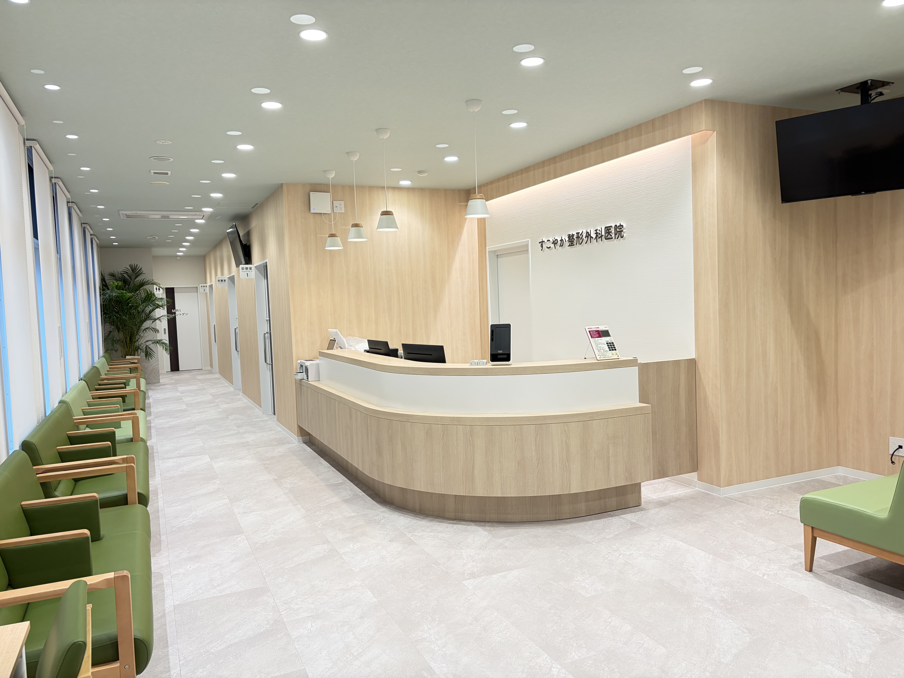
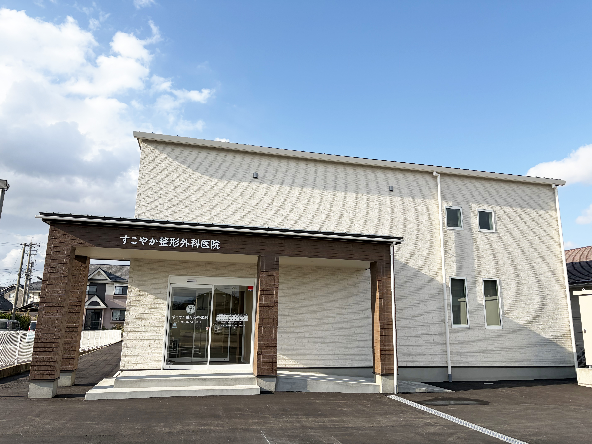
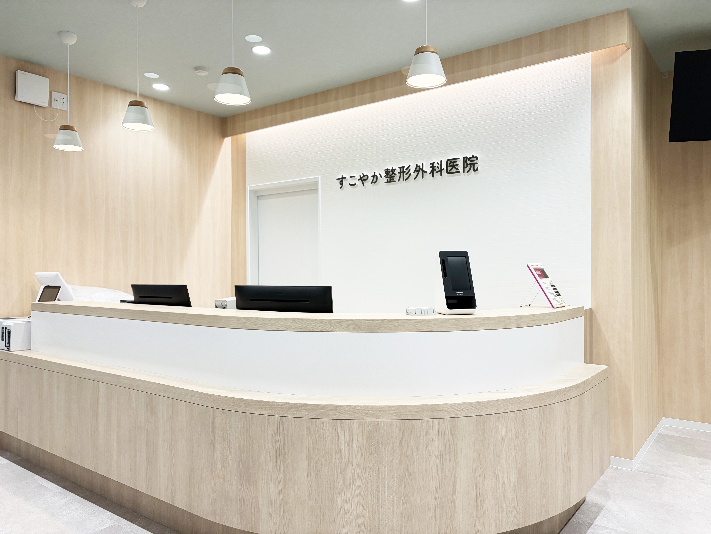
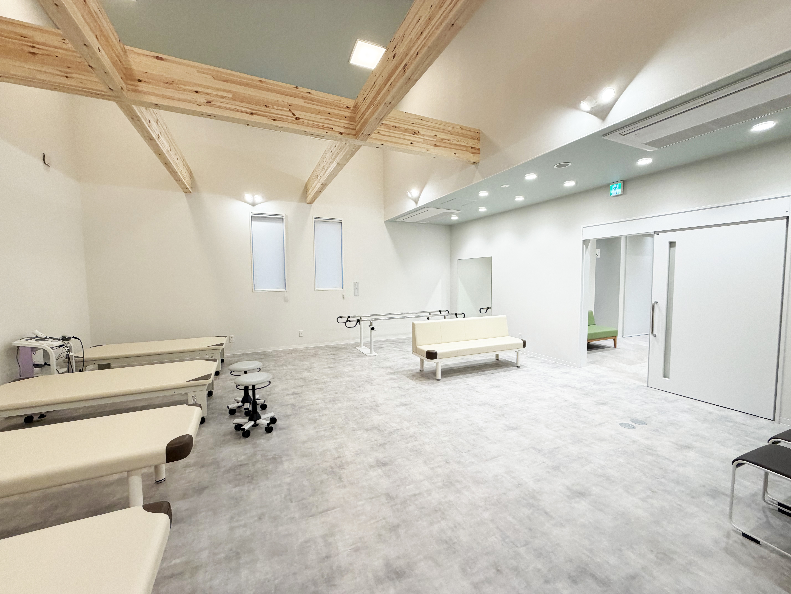
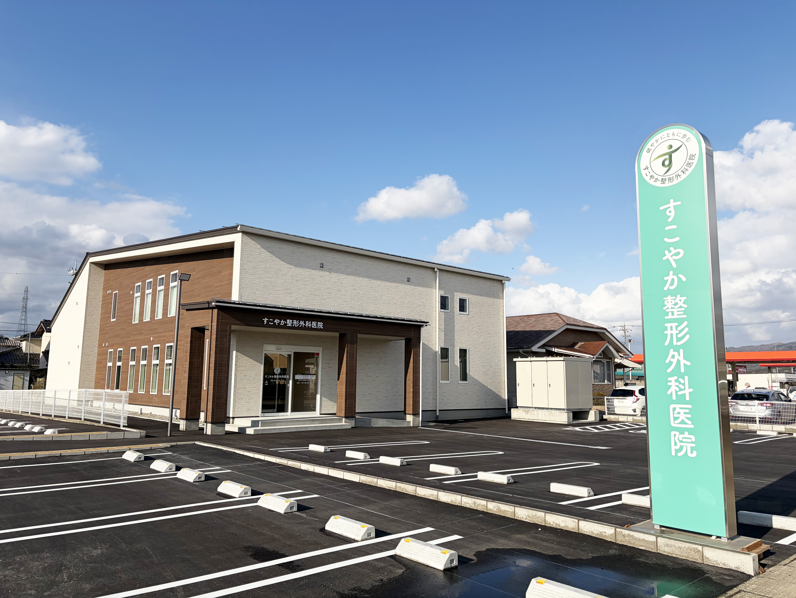

| 月 | 火 | 水 | 木 | 金 | 土 | 日祝 | |
|---|---|---|---|---|---|---|---|
| 9:00-12:30 | ● | ● | ● | － | ● | ● | － |
| 14:30-18:00 | ● | ● | ● | － | ● | － | － |
※受付終了は診療終了の30分前まで
お電話でのご予約
0767-22-1123
WEB予約(準備中)
地域の皆さまに信頼される医療機関を目指して
-DdbaCoy8.jpeg)
経験に裏打ちされた確かな診断と、最新の知見。そして何より、患者さまとの丁寧な対話を大切にしています。お困りごとに深く耳を傾け、おひとりお一人に最適な治療を一緒に考えてまいります。
1.5テスラMRIをはじめとした最新医療機器を導入し、住み慣れたこの地で質の高い医療を受けていただきたい。「ちょっと気になる」から「しっかり調べたい」まで、かかりつけ医として一番身近な相談窓口でありたいと考えています。

この地で20年以上、地域の皆様とともに歩んできました。震災を経験したからこそ、平時の健康管理はもちろん、いざという災害時にも地域を守れる拠点でありたい。これまでも、これからも、能登に根ざした医療者として皆様の安心を支え続けます。
整形外科全般からリハビリテーションまで、
幅広く対応いたします
打撲・脱臼などの外傷から、変形性関節症（膝・股関節・肩関節）変形性腰椎症などの変性疾患まで適宜対応させて頂きます。
スポーツ外傷に加え、疲労骨折・腰椎分離症・離断性骨軟骨炎などのスポーツ障害にも、MRI・超音波検査などを用いて早期に診断し、対応させて頂きます。
早期の診断と適切な処置が重要です。採血などの検査に加え、超音波検査などの画像診断を用い早期に診断後、内服あるいは注射薬などを用いて治療をさせて頂きます。
画像検査・骨密度検査で早期に診断後、必要に応じて内服・注射などで治療をいたします。
手術について： 手術が必要と判断した場合には、院長が近隣の病院と連携しこれまで通り手術を執刀いたします。
院長
Kenichi Nakamura
金沢大学 平成8年卒業
2006年〜 公立羽咋病院 整形外科
2013年〜 町立富来病院 整形外科
最新の医療機器で正確な診断と適切な治療を提供します

明るく清潔感のある空間で、リラックスしてお待ちいただけます。

開放感のある空間で、個別リハビリを行います。

〒925-0026
石川県羽咋市石野町イ61番1
0767-22-1123
駐車場30台完備
| 診療時間 | 月 | 火 | 水 | 木 | 金 | 土 | 日祝 |
|---|---|---|---|---|---|---|---|
| 9:00-12:30 | ● | ● | ● | － | ● | ● | － |
| 14:30-18:00 | ● | ● | ● | － | ● | － | － |
休診日：木曜・日曜・祝日・土曜午後
受付時間：午前 8:45～12:00 / 午後 14:15～17:30
当院では、地域の医療機関の先生方との連携を大切にし、患者様に切れ目のない医療を提供できるよう努めております。
MRI・CT等の画像検査や専門的な整形外科診療が必要な患者様がいらっしゃいましたら、お気軽にご紹介ください。検査結果・診療内容は速やかにご報告いたします。
＊MRI検査結果はレポート付きのご報告が可能です。依頼時にご相談ください。
お電話
0767-22-1123
FAX（紹介状送付先）
0767-22-1124